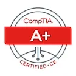
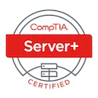
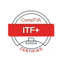

Active Directory Migration Plan
Reworked flat lab identity design into role-based OUs and groups.
- Problem: inconsistent OU and group structure
- Solution: staged migration and GPO targeting model
- Outcome: cleaner administration and validation steps
System Administration Portfolio
Windows Server • Active Directory • Microsoft 365 • Intune • Networking • PowerShell
I build practical Microsoft IT skills for real support work. I focus on identity, endpoint management, automation, troubleshooting, and clear operations documentation.
Professional Summary
I am an entry-level System Administrator and Service Desk Technician. I work with Windows Server, Active Directory, Entra ID, Microsoft 365, Intune, networking basics, and PowerShell automation. This portfolio shows lab and cloud work modeled after small-business IT operations.
Each project shows the change, the validation steps, and the result. I focus on cleaner identity structure, safer endpoint baselines, repeatable onboarding, and practical troubleshooting notes. Hiring teams can review the evidence quickly.
Core Skills
Note: detailed evidence and full case studies are hosted on separate documentation pages — Skills, Projects, and Documentation. Use those pages for recruiter-grade proofs and artifact lists.
AD users, groups, OU design, Entra ID roles, MFA, and access review basics.
Windows Server roles, DNS, DHCP, file services, GPO baselines, and server documentation.
Windows 11 compliance, Intune configuration profiles, Win32 app deployment, and validation logs.
Name resolution, addressing, VLAN awareness, firewall basics, and structured connectivity testing.
PowerShell scripts for onboarding, reporting, validation, and repeatable administrative tasks.
Incident notes, RCA workflow, Event Viewer review, DNS testing, and service validation.
Least privilege, MFA, secure workstation settings, audit evidence, and change validation.
SOPs, change records, playbooks, architecture notes, and recruiter-readable technical evidence.
Featured Projects
Reworked flat lab identity design into role-based OUs and groups.
Tenant administration practice across Entra ID, Exchange, Teams, SharePoint, and Intune.
Windows 11 compliance profile with export, validation log, and troubleshooting notes.
Structured investigation of authentication failures tied to DNS configuration.
Repeatable onboarding workflow using templates, validation, and logging.
Documentation
Quick links to core operational notes — full documents live on the Documentation hub if you need recruiter-grade artifacts.
Contact
Prefer to review evidence first? Visit the Documentation hub for artifact lists, then use the contact page to request full proofs or ask questions.
Tools & Technologies
Certifications & Training

CompTIA A+IT support fundamentals
CompTIA Server+Server operations
CompTIA ITF+IT fundamentals